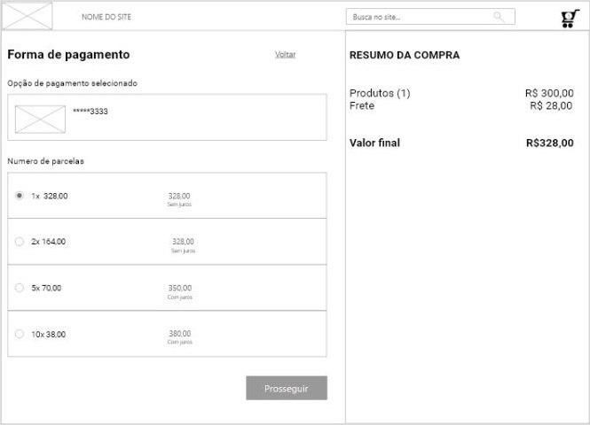

Processo de compra
Exemplo do padrão processo de compra.
Informações
Os usuários desejam comprar um produto já selecionado.
Apresentar aos usuários as etapas de compra.
O site permite a compra de mercadorias, geralmente um site de comércio eletrônico, mas também pode vender sites. Uma compra também pode fazer parte de tarefas maiores, como uma reserva.
Para comprar os produtos no carrinho, eles precisam selecionar a ação de pagamento. O checkout é um processo de compra em cinco etapas com as seguintes tarefas:
- Identifique o cliente
- Selecione o endereço de entrega e opções especiais
- Selecione o método de pagamento
- Veja a visão geral de todo o pedido
- Confirme e faça o pedido
- Receba confirmação por email
Os usuários podem cancelar o procedimento de pagamento a qualquer momento. Quando os usuários tentam novamente o check-out mais tarde, eles começam novamente na primeira tarefa. Considere um assistente para orientar o usuário nessas tarefas e minimizar o número de páginas da web usadas. No entanto, um assistente nem sempre é necessário apenas para uma compra. Muitas vezes, os sites solicitam detalhes que não são estritamente necessários para processar o pedido. Em muitos casos, todas as informações do pedido podem caber facilmente em uma página e, portanto, eliminando a necessidade de um assistente.
- Minimize a navegação e os elementos não relevantes da página: Como a compra é uma tarefa que requer bastante foco, o layout da página padrão durante o processo de compra deve ser simplificado. Todos os elementos que distraem devem ser removidos.
- Login de usuário: Muitos sites exigem que os usuários façam login como a primeira etapa do processo. Embora isso seja conveniente para os clientes que retornam, porque todos os seus dados pessoais podem ser reutilizados, não é muito bom para novos usuários. Novos clientes devem ter permissão para comprar itens sem criar uma conta. No final de uma compra, os usuários podem ser solicitados a se registrar . O registro pode ser simplificado porque todos os dados básicos já foram capturados durante o processo de compra, apenas o nome de usuário e a senha ainda precisam ser selecionados.
- Confirmação por email: É importante "dar" aos usuários algo que seja facilmente acessível após o fechamento do navegador. Um email com as informações sobre a compra é como um "recibo" para os usuários. Ele deve conter um número do pedido, uma lista de itens do pedido, todo o valor, endereço de entrega, informações de pagamento, data do pedido. Também deve conter ajuda para os usuários como rastrear pedidos, cancelá-los ou solicitar assistência.
Clientes da primeira vez ou clientes pouco frequentes são melhor ajudados com um Assistente que permite concluir a compra em pequenas etapas. Os clientes que retornam costumam usar o mesmo endereço de entrega e o mesmo cartão de crédito. Portanto, o processo pode ser realizado com mais eficiência em apenas uma tela de visão geral com um botão "comprar".